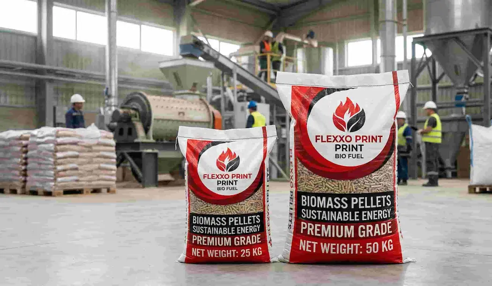
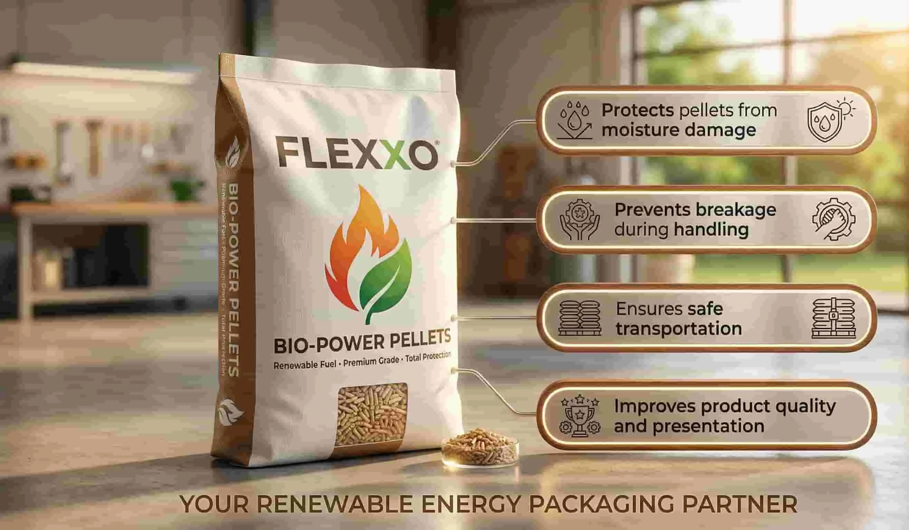

Heavy-duty 25kg, 40kg & 50kg PP woven biomass bags for wood pellets, husk pellets, and agro-briquettes.
With thermal power plants (NTPC co-firing mandates) and industrial boilers shifting rapidly to agro-residue fuel, pellet manufacturers need tough, moisture-safe biomass bags that do not tear during mechanical stitching or swell during humid transit. Wood pellets, mustard husk pellets, sawdust pellets, and bagasse briquettes crumble quickly into dust if moisture penetrates the sack.
Standard Biomass Bag Sizes & GSM Chart (25kg, 40kg, 50kg)
Different pellet bulk densities require different sack dimensions and fabric weights:
| Capacity | Recommended Bag Size | Fabric GSM | Best For |
|---|---|---|---|
| 25 KG Biomass Bag | 18" × 28" / 19" × 30" | 75 – 90 GSM | Retail wood pellets, BBQ fuel, export pallet cargo |
| 40 KG Pellet Bag | 22" × 32" (popular Punjab/MP) | 85 – 100 GSM | Manual handling, brick kiln & commercial boiler supply |
| 50 KG Biomass Bag | 24" × 36" / 24" × 38" | 95 – 115 GSM | NTPC co-firing plants, industrial agro pellets & briquettes |
| 500–1000 KG FIBC Jumbo | 90 × 90 × 120 cm | 150 – 175 GSM | Bulk power plant unloading & crane yard storage |
Why Biomass Pellet Packaging Fails (And How to Prevent It)
- Humidity & Rain Swelling: Agro and wood pellets act like a sponge. Unlined woven bags let humid air enter during monsoon freight. Add PP Lamination or an LDPE inner liner for export & monsoon storage.
- Drop & Hook Tearing: Standard 65 GSM rice sacks tear when 50 kg heavy pellets are stacked 10 layers high. Use 95–110 GSM UV-stabilized PP woven fabric.
- UV Sunlight Brittle Damage: Outdoor yard stockpiles turn ordinary polypropylene brittle in weeks. Always specify UV-stabilized virgin/semi-virgin PP plus UV-treated biomass storage covers.

Properly stacked biomass pellet bags and outdoor biomass storage covers for open-yard protection.
Types of Biomass Bags We Manufacture

1. Plain & Printed PP Woven Biomass Bags
Most economical workhorse bag for domestic pellet plants supplying boilers and co-firing mills. Available in 25kg, 40kg & 50kg with optional PE liner.
Explore PP Woven Bags →
2. Laminated & BOPP Pellet Bags
Moisture-sealed outer lamination or high-gloss 8-color printed BOPP film for European/Middle East wood pellet exports and retail BBQ pellet brands.
Explore BOPP Laminated Bags →Dispatch Across India's Top Biomass Hubs
From our plant in Morbi, Gujarat, we supply daily FTL and part-load consignments to biomass pellet mills in Punjab (Bathinda, Mansa, Ludhiana), Haryana (Karnal, Panipat), Madhya Pradesh, Rajasthan, Maharashtra, and direct port containers at Mundra & Kandla.
Get Best Factory Rate for Biomass Bags
Calculate exact bag weight & factory costing online, or message us on WhatsApp for sample swatches and today's bulk rate.